米国経済のまとめ｜毎週土曜｜後半：くわしいデータ
11/2〜11/6の米国経済：半導体株が急落、市場に強い恐怖
有名投資家の売買（13F）
運用額の大きい投資会社が3か月ごとに出す保有株の報告（四半期末から45日以内に提出）。前の四半期と比べた変化です。
バークシャー・ハサウェイ（ウォーレン・バフェット）
2026-06-30時点（2026-08-14提出）。保有の合計 2,993億ドル。上位：APPLE INC（22%）、AMERICAN EXPRESS CO（17%）、COCA COLA CO（11%）、ALPHABET INC（9%）、BANK OF AMER CORP（9%）
- ALPHABET INC：買い増し（株数 +45%）
- ALPHABET INC：買い増し（株数 +658%）
- DELTA AIR LINES INC：買い増し（株数 +44%）
- KROGER CO：一部を売った（株数 -22%）
- LENNAR CORP：買い増し（株数 +30%）
- CAPITAL ONE FINL CORP：一部を売った（株数 -58%）
デュケーヌ・ファミリー・オフィス（スタンレー・ドラッケンミラー）
2026-06-30時点（2026-08-14提出）。保有の合計 435万ドル。上位：Natera Inc（20%）、Taiwan Semiconductor Manufac（6%）、Stmicroelectronics N V（5%）、Insmed Inc（3%）、Ypf Sociedad Anonima（3%）
- Taiwan Semiconductor Manufac：買い増し（株数 +19%）
- Stmicroelectronics N V：買い増し（株数 +19%）
- Insmed Inc：買い増し（株数 +23%）
- Amazon Com Inc：買い増し（株数 +1083%）
- Alphabet Inc：新しく買った
- Seagate Technology Hldngs Pl：買い増し（株数 +141%）
アパルーサ（デビッド・テッパー）
2026-06-30時点（2026-08-14提出）。保有の合計 75億ドル。上位：AMAZON COM INC（16%）、MICRON TECHNOLOGY INC（15%）、TAIWAN SEMICONDUCTOR MANUFAC（11%）、ALPHABET INC（9%）、UBER TECHNOLOGIES INC（7%）
- AMAZON COM INC：買い増し（株数 +16%）
- MICRON TECHNOLOGY INC：一部を売った（株数 -41%）
- TAIWAN SEMICONDUCTOR MANUFAC：買い増し（株数 +24%）
- UBER TECHNOLOGIES INC：買い増し（株数 +21%）
- META PLATFORMS INC：買い増し（株数 +55%）
- ALIBABA GROUP HLDG LTD：一部を売った（株数 -42%）
ブリッジウォーター（レイ・ダリオが創業）
2026-06-30時点（2026-08-14提出）。保有の合計 244億ドル。上位：STATE STR SPDR S&P 500 ETF T（16%）、ISHARES TR（9%）、NVIDIA CORPORATION（3%）、BROADCOM INC（2%）、AMAZON COM INC（2%）
- STATE STR SPDR S&P 500 ETF T：買い増し（株数 +22%）
- ISHARES TR：買い増し（株数 +12%）
- NVIDIA CORPORATION：一部を売った（株数 -18%）
- BROADCOM INC：一部を売った（株数 -28%）
- AMAZON COM INC：一部を売った（株数 -54%）
- ALPHABET INC：一部を売った（株数 -34%）
経営陣・大株主の自社株の売買（11/2〜11/6の Form 4）
取引所で売った・買った分（ストックオプションの行使などは除く）。「計画」は、前もって決めた売却計画（10b5-1）による取引を含むもの。
| 会社 | 人 | 金額 | 計画 | |
|---|---|---|---|---|
| メタ | Andreessen Marc L 取締役 | 売り | 1,277万ドル | |
| インテル | TAN LIP BU CEO | 買い | 971万ドル | |
| ネットフリックス | SARANDOS THEODORE A Co-CEO | 売り | 181万ドル | |
| メタ | Olivan Javier Chief Operating Officer | 売り | 97万ドル | あり |
| アップル | Newstead Jennifer SVP, GC and Government Affairs | 売り | 78万ドル | あり |
| ネットフリックス | Neumann Spencer Adam Chief Financial Officer | 売り | 61万ドル | |
| ネットフリックス | HYMAN DAVID A Chief Legal Officer | 売り | 37万ドル | |
| パランティア | Stat Lauren Elaina Friedman 取締役 | 売り | 25万ドル | あり |
| アマゾン | Herrington Douglas J CEO Worldwide Amazon Stores | 売り | 24万ドル | あり |
過去の統計から見る、今の位置
データ：FRED（景気後退の月は全米経済研究所 NBER の判定）、Yahoo Finance。過去の例は回数が少ないため目安です。景気後退の判定は後から決まるため、最近の月はまだ判定されていないことがあります。
景気の流れ（今・3か月前・6か月前・1年前）
| 今 | 3か月前 | 6か月前 | 1年前 | |
|---|---|---|---|---|
| 失業率 | 4.1% | 4.1% | 4.3% | ― |
| 新規失業保険の申請（週の平均） | 19.5万件 | 20.3万件 | 20.8万件 | 22.7万件 |
| 雇用者数の増減（3か月平均） | +13.7万人 | +2.8万人 | +6.9万人 | -4.5万人 |
| CPI 前年比 | 3.7% | 3.5% | 3.3% | 3.0% |
| コアCPI 前年比（食品・エネルギー除く） | 2.6% | 2.6% | 2.6% | 3.0% |
| 政策金利（実効・月平均） | 3.88% | 3.63% | 3.64% | 4.09% |
| 長短金利の差（10年−2年・月平均） | +0.34ポイント | +0.47ポイント | +0.49ポイント | +0.54ポイント |
| 10年債の利回り（月平均） | 4.89% | 4.68% | 4.48% | 4.09% |
| 原油の商業在庫 | 415百万バレル | 409百万バレル | 463百万バレル | 421百万バレル |
| VIX（月平均） | 22.5 | 15.2 | 17.2 | 19.9 |
逆イールド（10年債−2年債がマイナス）と景気後退
1976年以降の逆イールド（2か月以上）は 8回。そのうち 6回は、始まってから4年以内に景気後退が始まった。開始から景気後退までは 11〜23か月（中央値 18か月）。2回は逆イールドの間に、4回はプラスに戻ってから始まった。プラスに戻ってから始まった回は、戻ってから 4〜22か月後（中央値 10か月）。
今（2026年11月の平均）は +0.34ポイント。直近の逆イールドは 2022年7月〜2024年8月で、終わってから 27か月。
| 始まり | 終わり | 長さ | 景気後退の始まり | 始まりから | 終わりから |
|---|---|---|---|---|---|
| 1978年9月 | 1980年4月 | 20か月 | 1980年2月 | 17か月 | -2か月 |
| 1980年9月 | 1981年10月 | 14か月 | 1981年8月 | 11か月 | -2か月 |
| 1982年2月 | 1982年6月 | 5か月 | なし（4年以内） | ― | ― |
| 1989年1月 | 1989年9月 | 9か月 | 1990年8月 | 19か月 | 11か月 |
| 2000年2月 | 2000年12月 | 11か月 | 2001年4月 | 14か月 | 4か月 |
| 2006年2月 | 2006年3月 | 2か月 | 2008年1月 | 23か月 | 22か月 |
| 2006年6月 | 2007年5月 | 12か月 | 2008年1月 | 19か月 | 8か月 |
| 2022年7月 | 2024年8月 | 26か月 | なし（4年以内） | ― | ― |
サームルール（失業率の上がり方）
サームルールは 2026年10月が 0.00。1959年以降、0.50を上回ったのは 13回で、そのうち 11回は前後1年以内に景気後退が始まっていた。最新の失業率は 4.1%（2026年10月）。計算上、次の月の失業率が 5.6%以上になると 0.50 に届く。
景気後退の前の失業率
今の失業率 4.1%は、過去12か月の最低から +0.0ポイント。過去の景気後退が始まる直前は、同じ上昇幅の中央値が +0.3ポイントだった（11回）。
| 景気後退の始まり | 直前の失業率 | 12か月の最低からの上昇（ポイント） |
|---|---|---|
| 1953年8月 | 2.6% | +0.1 |
| 1957年9月 | 4.1% | +0.4 |
| 1960年5月 | 5.2% | +0.4 |
| 1970年1月 | 3.5% | +0.1 |
| 1973年12月 | 4.8% | +0.2 |
| 1980年2月 | 6.3% | +0.7 |
| 1981年8月 | 7.2% | +0.0 |
| 1990年8月 | 5.5% | +0.3 |
| 2001年4月 | 4.3% | +0.5 |
| 2008年1月 | 5.0% | +0.6 |
| 2020年3月 | 3.5% | +0.0 |
過去の大きな下落と、そのときの経済
1950年以降、S&P500が高値から20%以上下がったのは 11回。そのうち 7回は景気後退と重なった。今は最高値（2026/10/06）から -5.7%。表は、高値をつけた月の失業率・政策金利・物価・長短金利差。
| 高値の月 | 下落率 | 底までの日数 | 景気後退 | 失業率 | 政策金利 | CPI前年比 | 長短金利差 |
|---|---|---|---|---|---|---|---|
| 1956/08 | -21% | 445日 | あり | 4.1% | 2.73% | +2.2% | ― |
| 1961/12 | -28% | 196日 | なし | 6.0% | 2.33% | +0.7% | ― |
| 1966/02 | -22% | 240日 | なし | 3.8% | 4.60% | +2.6% | ― |
| 1968/11 | -36% | 543日 | あり | 3.4% | 5.82% | +4.4% | ― |
| 1973/01 | -48% | 630日 | あり | 4.9% | 5.94% | +3.6% | ― |
| 1980/11 | -27% | 622日 | あり | 7.5% | 15.85% | +12.6% | -0.83 |
| 1987/08 | -34% | 101日 | なし | 6.0% | 6.73% | +4.3% | +1.01 |
| 2000/03 | -49% | 929日 | あり | 4.0% | 5.85% | +3.8% | -0.27 |
| 2007/10 | -57% | 517日 | あり | 4.7% | 4.76% | +3.6% | +0.56 |
| 2020/02 | -34% | 33日 | あり | 3.5% | 1.58% | +2.3% | +0.17 |
| 2022/01 | -25% | 282日 | なし | 4.0% | 0.08% | +7.6% | +0.78 |
| 今 | -6% | 4.1% | 3.88% | ― | +0.39 |
各指標の説明とグラフ
GDPNow（今の四半期の成長率の予測）
アトランタ連銀が、発表済みの統計から今の四半期の実質GDP成長率（年率）を予測した値。新しい統計が出るたびに変わる。
10/1の予測は 3.5%。前回（7/1）の 3.3% から +0.2ポイント。
新規失業保険の申請件数（週）
仕事を失って失業保険を申請した人の数。雇用の変化が早く出る。
10/31までの1週間は 18.9万件。前の週（19.5万件）から -0.6万件。1年前は 22.8万件。
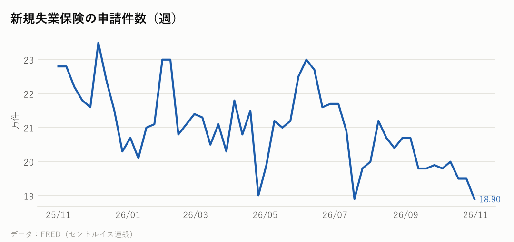
実質GDP成長率（前の四半期比・年率）
米国の経済の大きさの伸び。四半期ごとに発表。
2026年7〜9月期は +3.4%。その前の四半期は +2.2%。
消費者物価指数（CPI）の前年比
モノやサービスの値段が1年前と比べてどれだけ上がったか。
2026年9月は +3.7%。前の月は +3.4%。
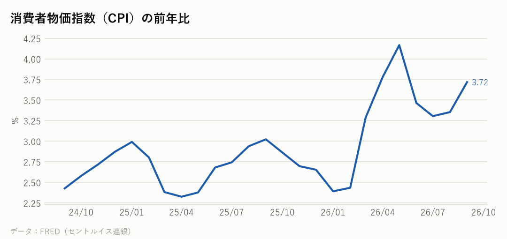
失業率
働きたい人のうち、仕事がない人の割合。
2026年10月は 4.1%。前の月は 4.2%。
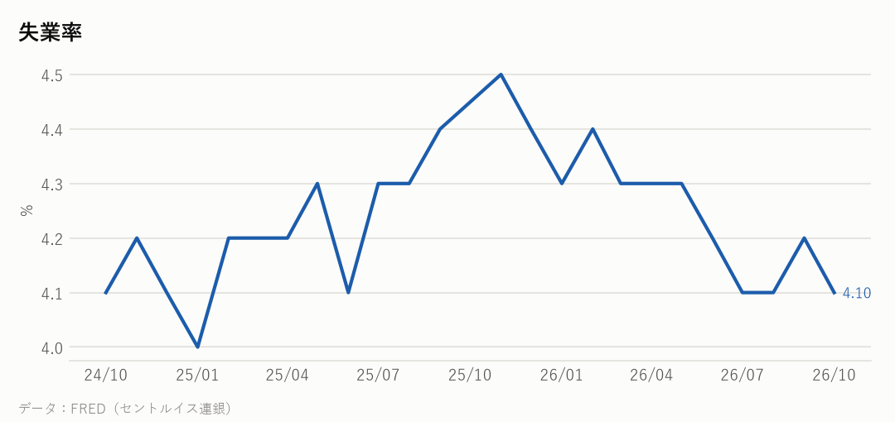
雇用者数の増減（農業以外・前月比）
会社などで働く人が、前の月より何人増えたか。
2026年10月は +16.5万人。前の月は +6.0万人。
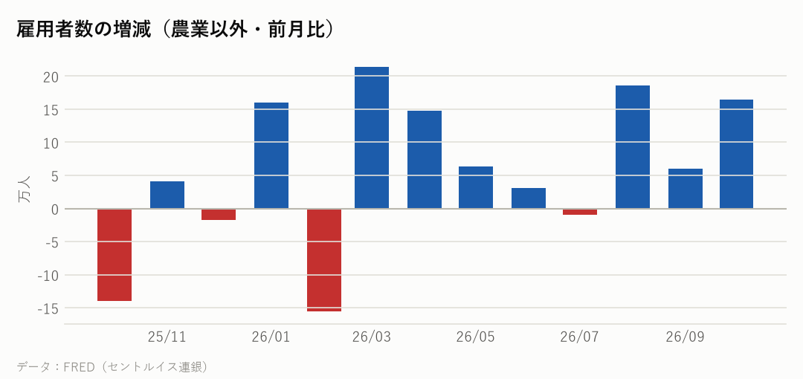
サームルール
失業率の上がり方から計算する値。0.50以上になると、景気後退のサインとされる。
2026年10月は 0.00。サインとされる 0.50 まで、あと 0.50。
政策金利（FRBの目標）
FRB（米国の中央銀行）が決める短期金利の目標の上限。
11/6時点で 3.75〜4.00%。1年前は上限 4.00%。
2年債と10年債の利回り
2年債は政策金利の見通し、10年債は住宅ローンなど長い金利のもとになる。
11/6時点で、2年債は 4.51%、10年債は 4.86%。1週間前と比べて、2年債は -0.05、10年債は -0.08ポイント。
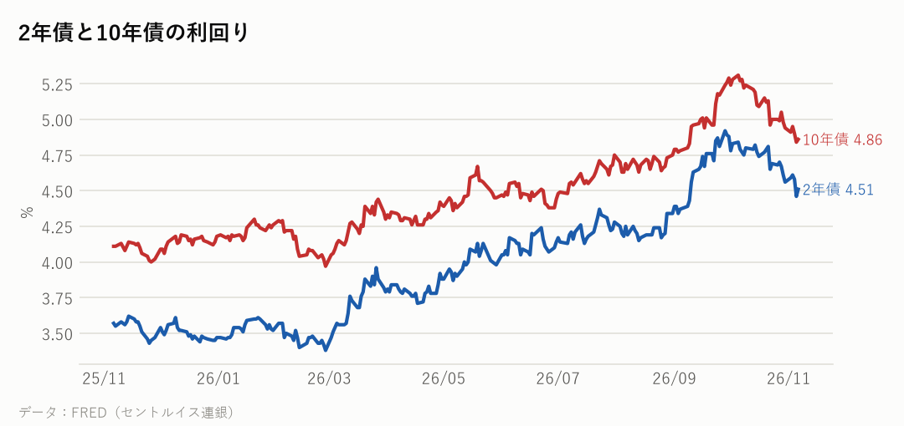
長短金利の差（10年−2年）
マイナス（逆イールド）は景気後退のサインとして話題になる。
11/6時点で +0.35ポイント（10年債の方が高い）。
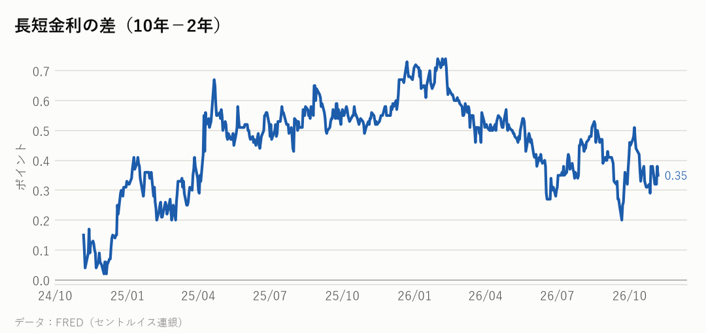
FRBの総資産
FRBが持つ国債などの合計。増えると市場へのお金の量が増える方向、減ると減る方向。
11/4時点で 6.75兆ドル。前の週から +25億ドル。1年前は 6.57兆ドル。
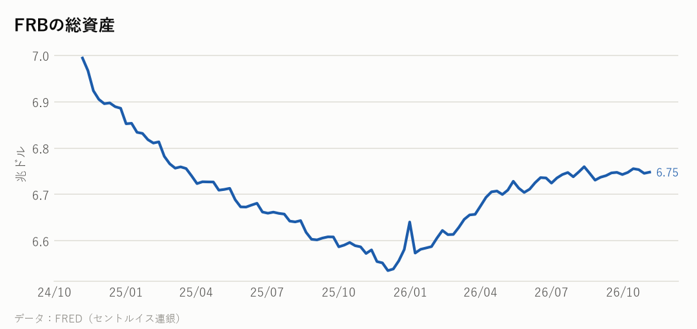
NY連銀 SOMA（FRBが持つ国債など）
FRB（NY連銀）が公開市場操作で持っている国債・住宅ローン担保証券の合計。減ると市場のお金が減る方向（量的引き締め）。
11/4時点で 6.36兆ドル。1週間前から +18億ドル。1年前は 6.15兆ドル。
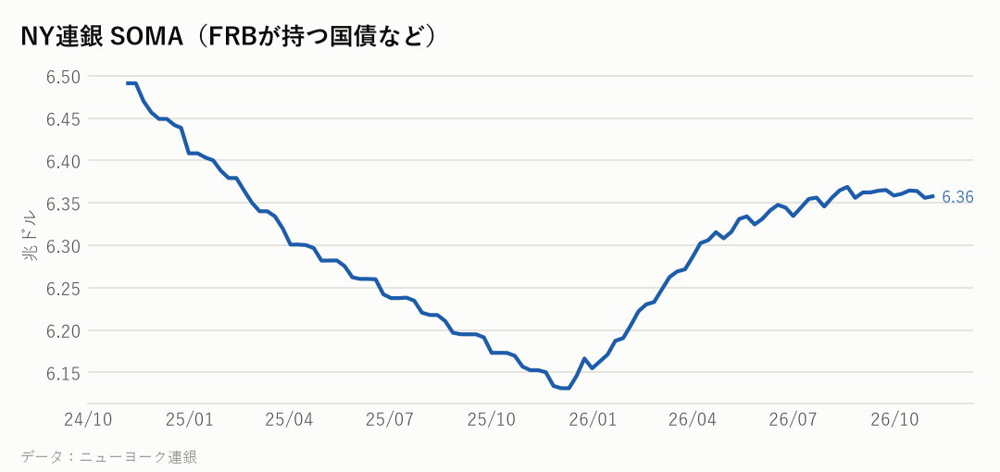
米国の政府の借金（債務残高）
米財務省が毎日出す、政府の借金の残高。
11/6時点で 40.55兆ドル。約1か月前（10/7）から +2,687億ドル。1年前は 38.12兆ドル。
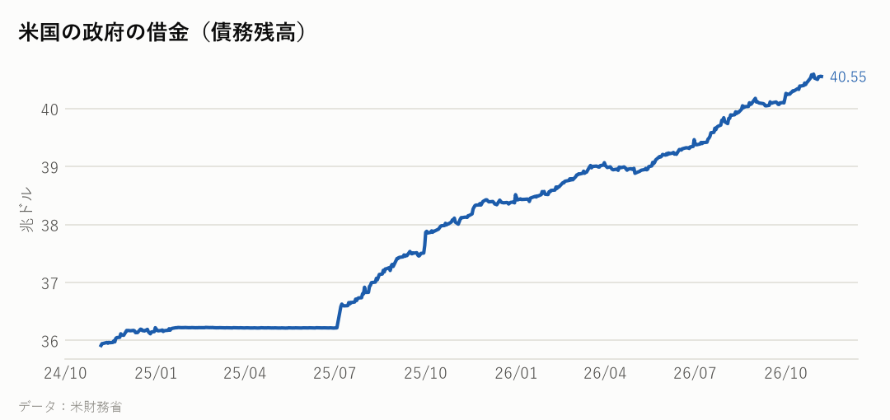
国の借金の利払い（年率）
米国の政府が借金に払う利息（四半期の値を1年分に直したもの）。
2026年7〜9月期は 年 1.33兆ドルのペース。1年前の同じ時期は 1.24兆ドル。
住宅ローン金利（30年固定）
フレディマックの調べによる、30年固定の住宅ローンの平均金利。
11/5の週は 7.18%。前回は 7.24%、1年前は 6.22%。
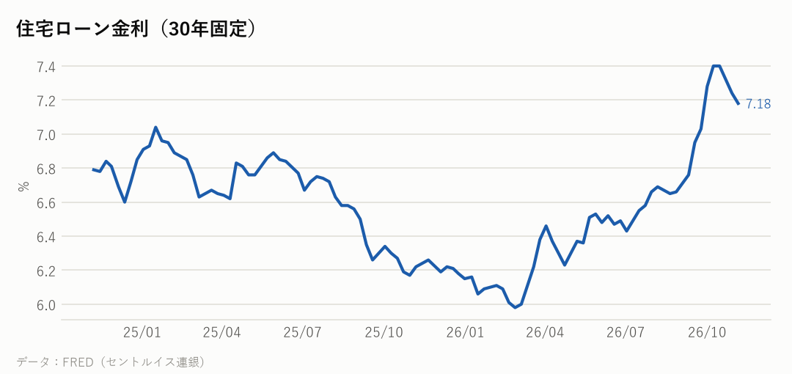
住宅ローンの延滞率（銀行）
銀行が持つ住宅ローンのうち、支払いが30日以上遅れている割合（四半期）。
2026年4〜6月期は 1.86%。前回は 1.88%、1年前は 1.78%。
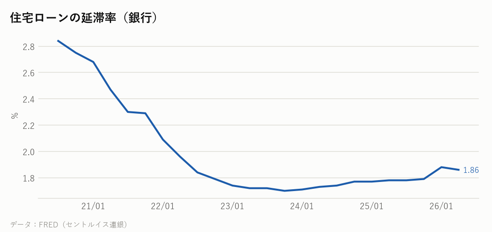
クレジットカードの延滞率（銀行）
銀行のクレジットカードの残高のうち、支払いが30日以上遅れている割合（四半期）。
2026年4〜6月期は 2.85%。前回は 2.91%、1年前は 3.04%。
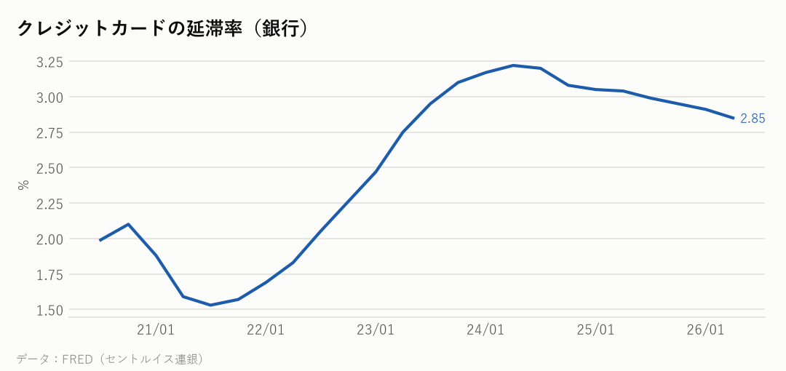
原油の商業在庫（戦略備蓄を除く）
石油会社などが持つ原油の量。
10/30までの週で 409.8百万バレル。前の週から -0.9百万バレル。1年前は 421.2百万バレル。
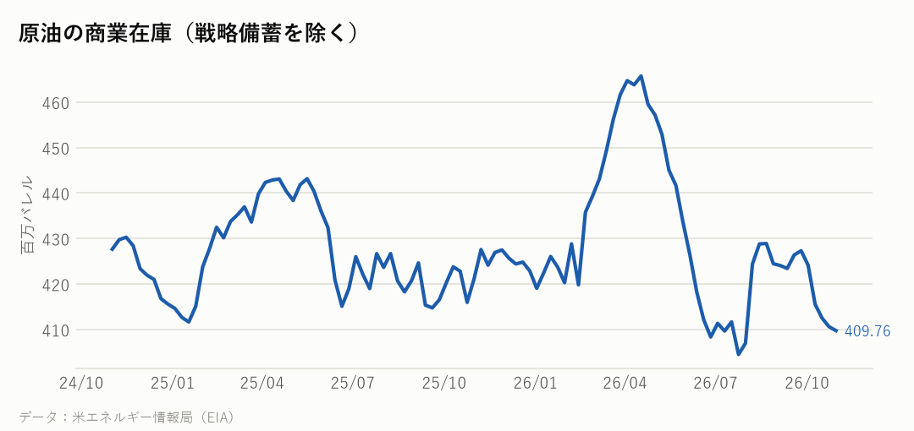
戦略石油備蓄（SPR）
政府が非常時のために持つ原油の量。
10/30までの週で 282.2百万バレル。1年前は 409.6百万バレル。
ガソリン価格（レギュラー・全米平均）
1ガロン（約3.8リットル）あたりの値段。
11/2の週は 1ガロン 4.15ドル。前の週から -0.12ドル。1年前は 3.02ドル。
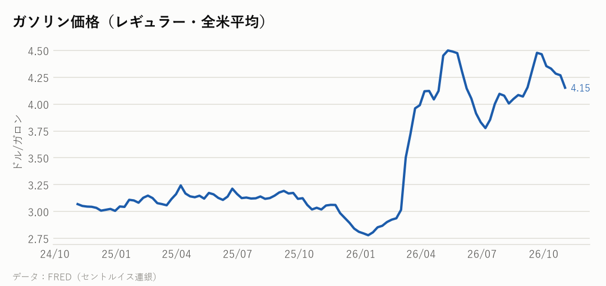
求人数（JOLTS）
2026年9月は 7.52百万件。前回は 7.19百万件、1年前は 7.17百万件。
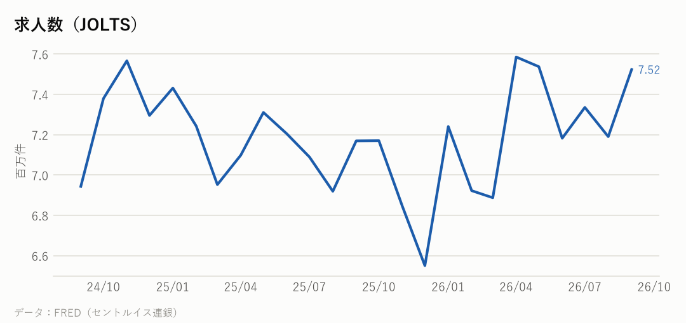
小売売上高
2026年9月は 7,450億ドル。前回は 7,393億ドル、1年前は 7,009億ドル。
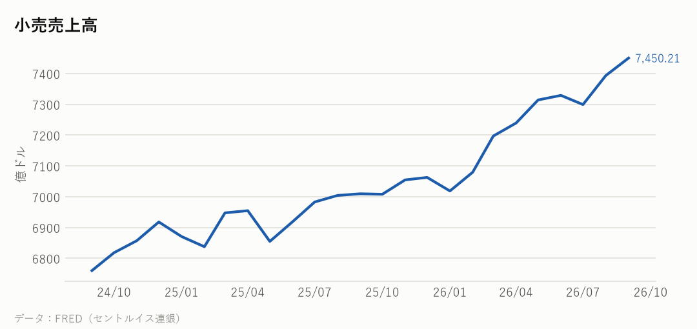
住宅着工件数（年率）
2026年9月は 1,221千件。前回は 1,288千件、1年前は 1,319千件。
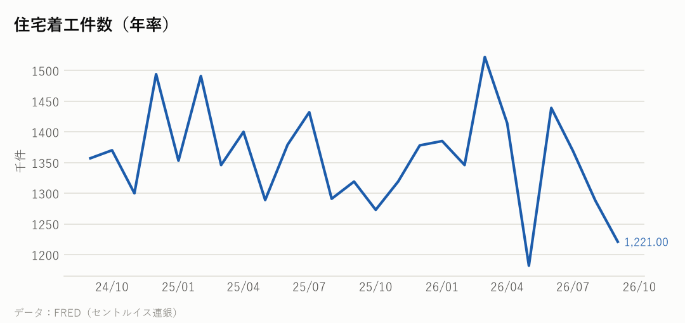
新築住宅の販売件数（年率）
2026年9月は 676千件。前回は 680千件、1年前は 714千件。
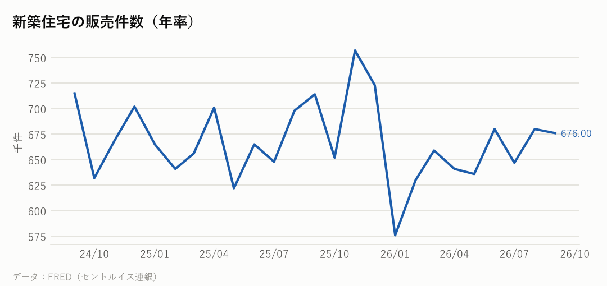
売り出し中の住宅の数
2026年10月は 118.4万件。前回は 116.2万件、1年前は 110.2万件。
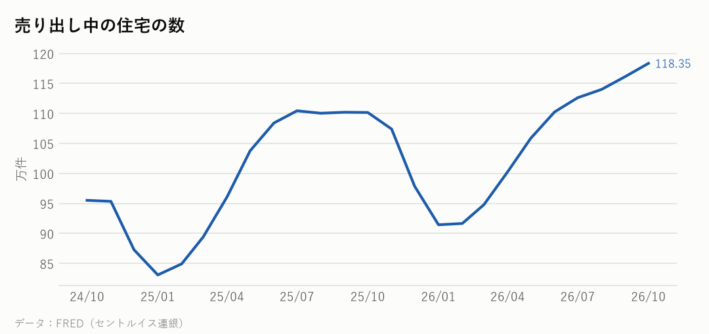
売り出し価格の中央値
2026年10月は 41.5万ドル。前回は 41.9万ドル、1年前は 42.4万ドル。
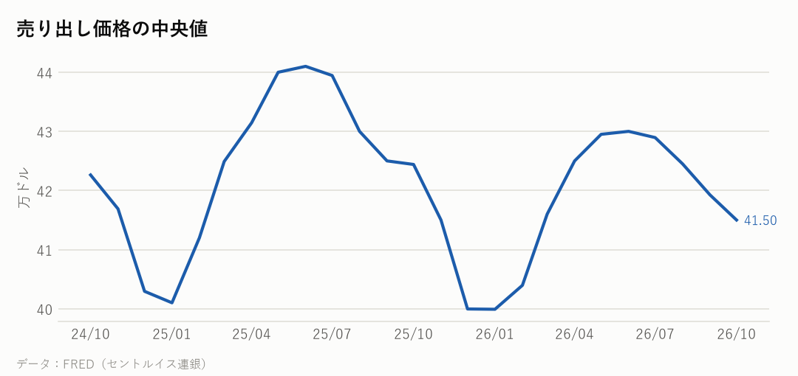
銀行がFRBに預けているお金（準備預金）
11/4は 2.93兆ドル。前回は 2.89兆ドル、1年前は 2.86兆ドル。
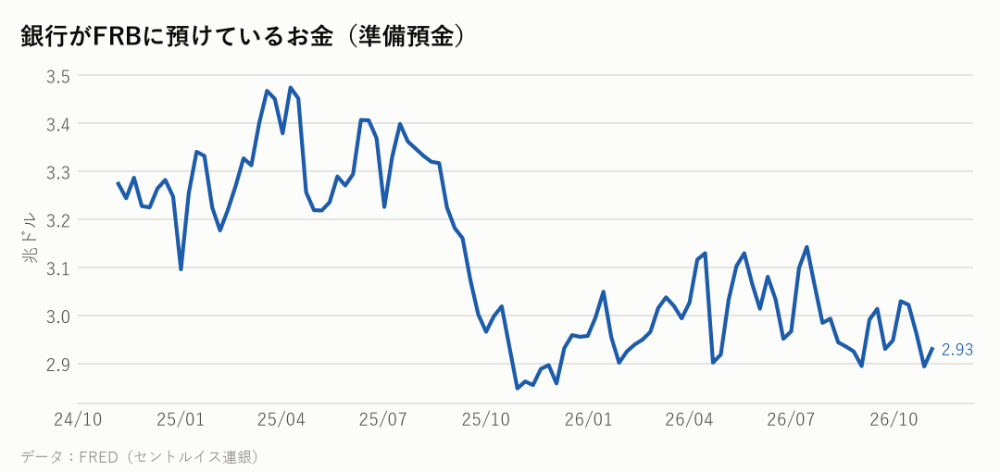
リバースレポ（FRBにあずけられたお金）
11/6は 1億ドル。前回は 1億ドル、1年前は 108億ドル。
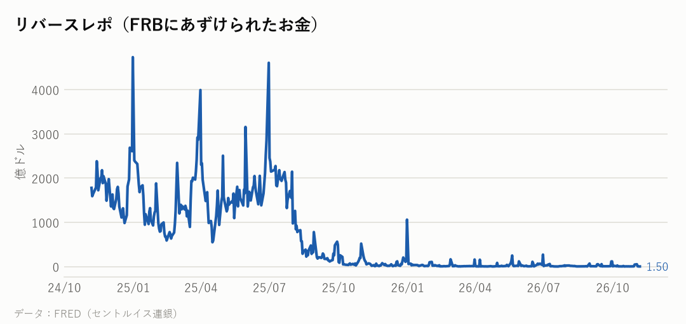
財務省の口座（TGA）
11/4は 0.96兆ドル。前回は 1.00兆ドル、1年前は 0.94兆ドル。
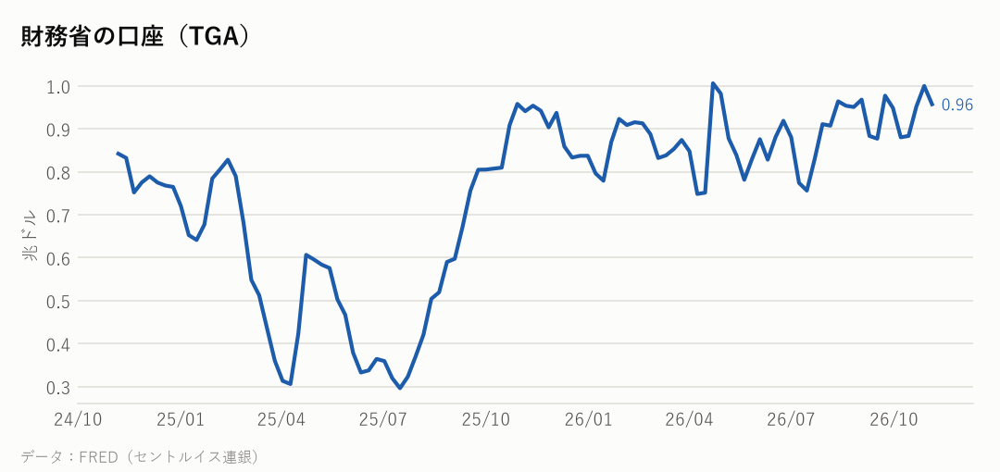
恐怖指数（VIX）
S&P500のオプションの値段から計算する、今後30日の値動きの大きさの予想。
11/6の終値は 25.64。1週間前は 19.42。20を超えると、市場の不安が大きいとされることが多い。
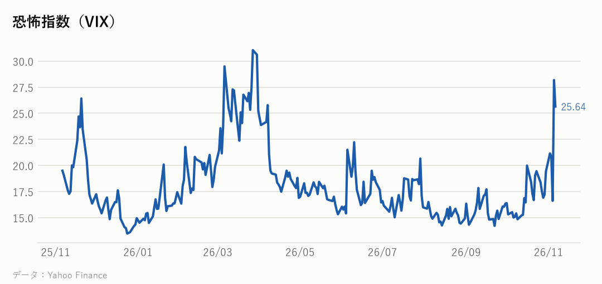
NasdaqWhy 恐怖・強欲指数（独自の計算）
11/6は 23（極度の恐怖）。1週間前は 27、1か月前は 44。
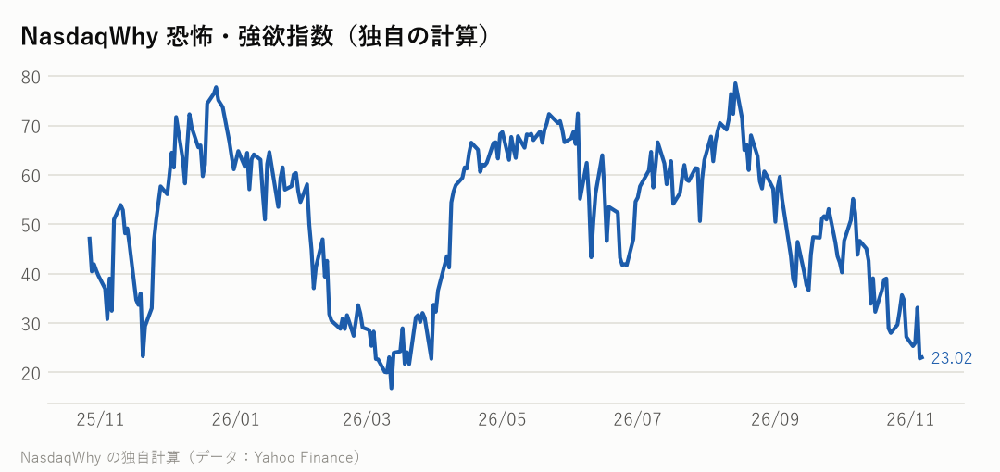
11/2〜11/6の半導体トピック
米国に加えて、韓国・日本・台湾などの会社の動き（ニュースの見出しより）。
- マイクロンはHBM（広帯域メモリー）で強い立場を保つとの分析が出た（Yahoo Finance）
- メモリー不足の波及が懸念され、マイクロン株が急落した（Investor's Business Daily）
- 製造装置のアプライド・マテリアルズとKLAの株価が下落した（FinancialContent）
- マイクロンはHBM偏重で粗利益率が圧迫され、品不足は長引くとの分析（BigGo Finance）
- メモリー不足の波及が、マイクロン株の重荷になったとの指摘（Investor's Business Daily）
- アプライド・マテリアルズやKLAなど製造装置株が反発（TradingView）
- サムスンは、AI向け半導体の品不足がさらに強まるとの見方を示しました。（Reuters）
- マクロニクスのミン・ウー氏は、メモリーの品不足は2030年まで続き、値段は今より下がらないとの見方を示しました。（BigGo Finance）
- サムスン電子は、2030年までに8インチのファウンドリー（受託生産）事業から撤退します。（THE ELEC, Korea Electronics Industry Media）
- マイクロンは、組合から利益の15%の配分を求められ、台湾の工場建設を止めました。（BusinessKorea）
- TSMCが、先端メモリーの生産を検討していると報じられました。（Reuters）
11/2〜11/6の決算の解説
- インテル（2026年7〜9月期）：データセンターは急伸、次の四半期は減収の見通し
- AMD（2026年7〜9月期）：データセンターがほぼ倍増、次の四半期は約170億ドルの見通し
- テスラ（2026年7〜9月期）：売上は横ばい、設備投資は前年の約2.1倍に
- メタ（2026年7〜9月期）：売上26%増、訴訟の費用で営業利益は37%減
- マイクロソフト（2026年7〜9月期）：Azure 48%増、受注残は6,770億ドルに
- アマゾン（2026年7〜9月期）：AWS 39%増で過去最高の利益率、設備投資は前年の約2.2倍
- アドバンテスト（2026年7〜9月期）：売上82%増で四半期の過去最高、通期予想を引き上げ
- アルファベット（2026年7〜9月期）：クラウドがほぼ倍増、設備投資は前年の約2.1倍
データ：FRED（セントルイス連銀。もとは米労働省・米商務省・FRB など）、米エネルギー情報局（EIA）、ニューヨーク連銀、米財務省、SEC（13F・Form 4）、Yahoo Finance。コメントはニュースの見出しの要約です。